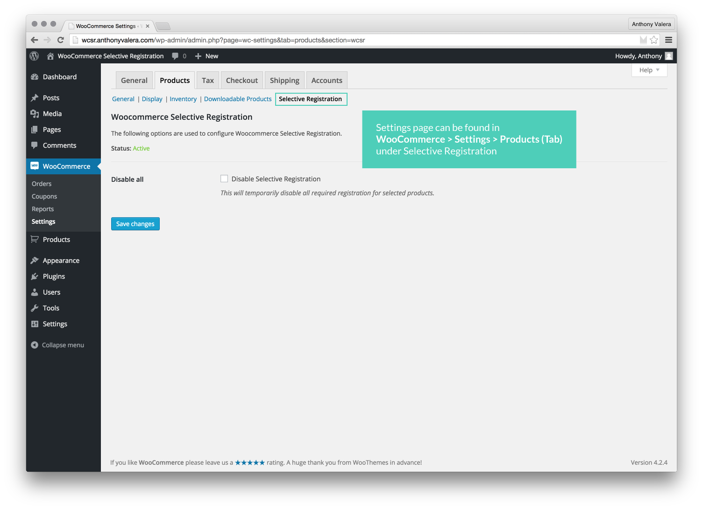
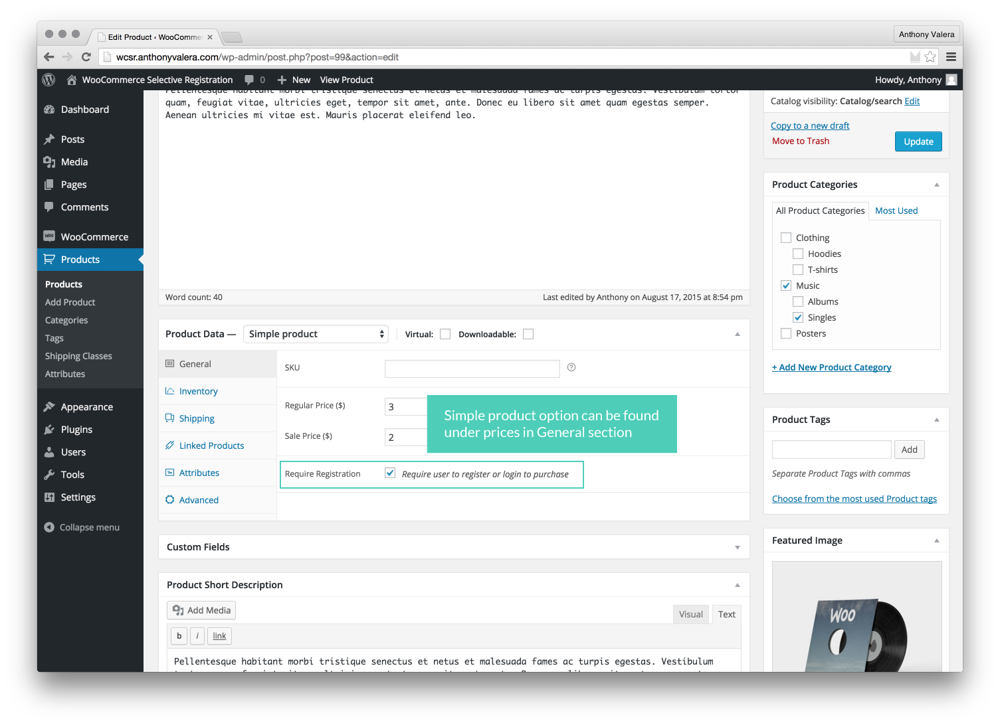
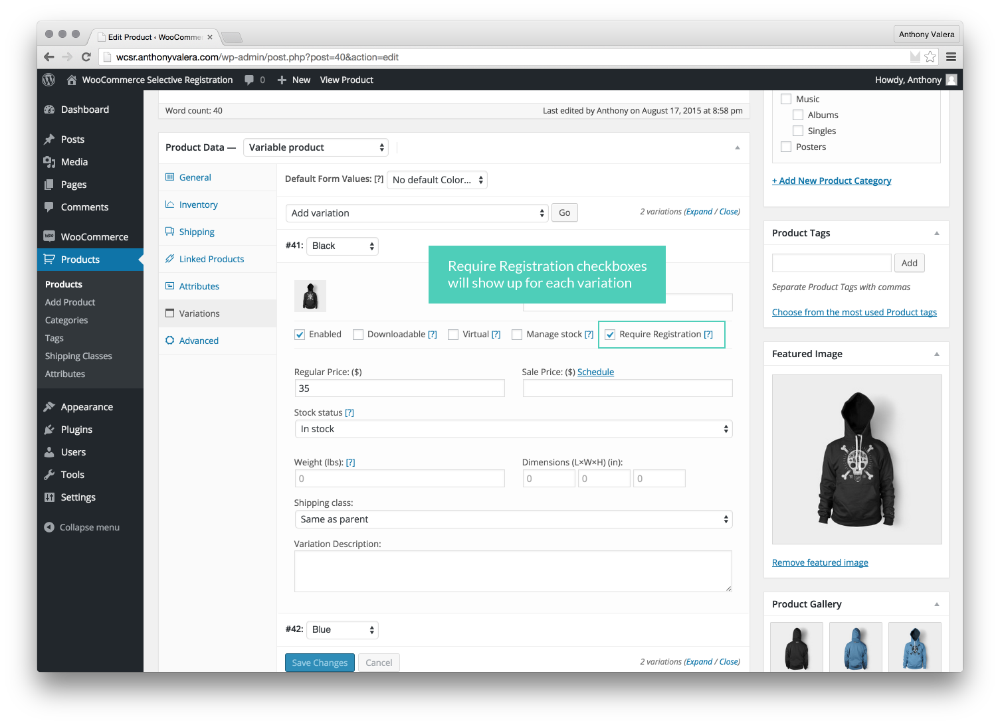

Created: 08/13/2015
Last updated: 08/13/2015
By: Anthony Valera
Email: support@anthonyvalera.com
Website: anthonyvalera.com
Thank you for purchasing WooCommerce Selective Registration. This documentation goes over installation, set up, and general support questions. If you have any questions that are beyond the scope of this documentation, please feel free to email me at support@anthonyvalera.com or visit the plugin on CodeCanyon and leave a comment.
General information
Plugin settings
Using the plugin
Advanced Documentation
Additional information
WooCommerce has an option to enable guest checkout, which allows anyone who visits your site to purchase a product without logging in and/or registering. If you disable guest checkout, users are not able to purchase ANY product without registering or logging in. This can be an issue if you would like some products to require a logged in user, and others to be available to guests.
WooCommerce Selective Registration gives you the option to choose which products should require a logged in and registered user, and which products should be open to the public.
WooCommerce Selective Registration features:
WordPress method
Download the plugin from your CodeCanyon account and upload the zip by navigating to Plugins > Add New > Upload Plugin in the WordPress admin dashboard. After the plugin is successfully installed, go to Plugins tab in the WordPress admin navigation, find WooCommerce Selective Registration, and click Activate.
FTP method
Download the plugin from your CodeCanyon account and unzip it. Upload the unzipped folder "woocommerce-selective-registration" to your plugin directory (usually wp-content/plugins) on your server. Once fully uploaded, login to your WordPress admin dashboard, navigate to Plugins, and click activate under the plugin name.
That's it! WooCommerce Selective Registration is now ready to use!

The settings page for the plugin can be found in WooCommerce > Settings > Products (Tab) > Selective Registration. The settings page lists the status of the plugin and an option to temporarily disable the required registration set for all products. If Disable All is checked, any product that you set that requires registration or login will no longer require registration/login.
WooCommerce Selective Registration supports both simple products and variable products. It is designed to look and feel native. Once enabled for a product and saved, any cart that contains that product will require the user to login or register to purchase. If the item is removed from their cart, and no other product within a users cart requires registration, the user will be able to purchase and complete their order without logging in or registering.

The option to turn on selective registration for a simple product can be found on the Edit Product page, under the product data table. The checkbox appears underneath the price section, in the general tab.

The option to turn on selective registration for a variable product can be found on the Edit Product page, under the product data table. Once the attributes for a variable product has been set and can be used for variations, the checkbox to enable selective registration can be found underneath SKU and next to the Manage Stock? option.
WooCommerce Selective Registration requires WooCommerce 2.2+ due to the way the required registration option is displayed and functions in the WordPress Admin. On the front end at checkout, the plugin searches through the users cart and checks if any product has required registration enabled. If enabled, the plugin "hooks" into WooCommerce and changes a few things:
The plugin also checks to make sure that its status is enabled in the WordPress admin dashboard.
WooCommerce Selective Registration uses five hooks to display the required checkbox option on the Edit Product page.
Within a simple product, we hook into woocommerce_product_options_general_product_data and display it underneath the prices in the general tab.
Within a variable product, we hook into woocommerce_variation_options and use a custom template to match the other checkboxes in the variation options row. The template function is based on the variation_checkbox WooCommerce function to display checkboxes.
The plugin then saves the data using its applicable hooks.
On the front end, we only hook into WooCommerce on the checkout page. We use four actions and two filters:
Actionswoocommerce_before_checkout_form [?]woocommerce_checkout_fields [?]woocommerce_after_checkout_form [?]woocommerce_before_checkout_process [?]Due to the way WooCommerce Selective Registration sets WooCommerce parameters, the options enable_signup and enable_guest_checkout are defaulted to TRUE and must_create_account is defaulted to FALSE. This should not be an issue with most users, as enabling sign up and guest checkout are dependent upon the environment that allows the main functionality of this plugin to work.
If you'd like to learn more about how the plugin works, feel free to check the source code.
WooCommerce Selective Registration has little requirements outside of WooCommerce and WordPress and their dependencies. If you are able to run WordPress 4.0+ and WooCommerce 2.2.2+, you should not run into any problems activating or installing this plugin. In the unlikely event a problem does occur, please make sure your server supports the following:
PHP: 5.4+Please keep in mind that WooCommerce must by activated for this plugin to work.
While WordPress and WooCommerce are relatively easy to update, updating your PHP may require extra assistance. If your server is running PHP 5.3 or below, please contact your hosting provider and request an update.
Still experiencing problems?
If you are still experiencing problems running this plugin, feel free to contact me at support@anthonyvalera.com, or leave a comment on the plugin page at CodeCanyon.
Version 1.0.1 (October 2015)
Version 1.0 (August 2015)
Thank you again for purchasing WooCommerce Selective Registration!
Have a question or comment? Email support@anthonyvalera.com or leave a comment on the CodeCanyon plugin page.